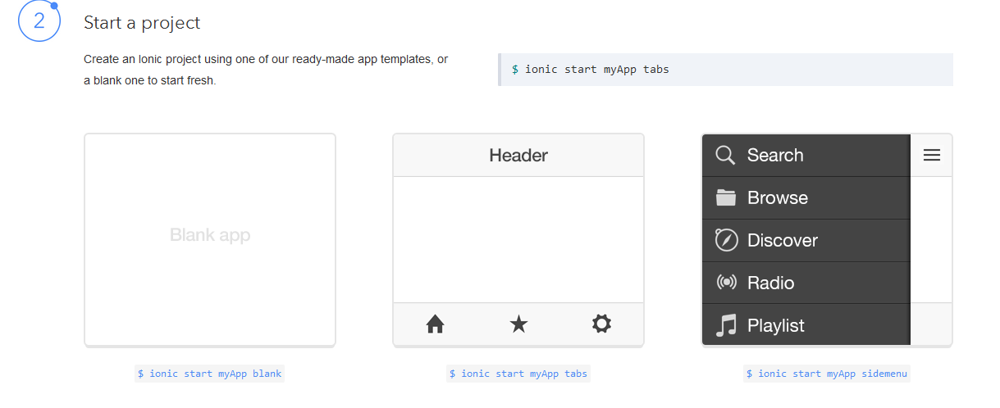

Angular and Ionic
Creating Amazing Apps with Angular and Ionic
Dan Slack / @javaslack
About Me
 Software Developer for the past 10 years. Enterprise data with web stuff mixed in. Consultant, father, board gamer...
Software Developer for the past 10 years. Enterprise data with web stuff mixed in. Consultant, father, board gamer...
Introduced to AngularJS nine months ago, working with it in production....
Worked with Ionic for the past 5 months...
Agenda
- Angular JS Overview
- Components
- Demo of Angular JS App
- Ionic Overview
- Ionic Components
- Mobilification of Angular Demo App using Ionic
Caveats...
AngularJS is amazing, fun, useful... but....

About AngularJS
NOTE: I will only be covering the basics of AngularJS.
- Open Source Framework (In Development for 5 years)
- Maintained by Google Employees
- Is a MVW Framework (Model-View-'Whatever')
Major Parts of AngularJS
There are several parts that make up an AngularJS app
- Directives
- Controllers
- Routing
- Services
Directives
Directives are essentially "Web Components".
<div ng-app ng-init="isViewable=true; items = [{name:'Hello'},{name:'World'}]">
<div ng-if="isViewable">
<ul>
<li ng-repeat="item in items">{{item.name}}</li>
</ul>
</div>
</div>See http://codepen.io/dslack/pen/hIKDc for Code
Directives
Two-way data binding is a huge part of AngularJS, and can be demonstrated with some fancy directives
<div ng-app>
<div>
<form role="form">
<div class="form-group col-sm-3">
<label>Search Text</label>
<input type="text" class="form-control" ng-model="searchText"/>
<strong>{{searchText | uppercase}}</strong>
</div>
</form>
</div>
</div>See http://codepen.io/dslack/pen/ujilz for Code
Filters
Notice from the other slide...
...
{{searchText | uppercase}}
...
Filters allow us to change the look of our text without actually changing the model itself.
Controllers and $scope
The main way to get data from and to the View is to use Controllers. Every controller created has a $scope object that lets us do some powerful things
- Retrieve and Store data
- Add helper functions
- Watch when data changes
- Use events
Controllers and $scope
angular.module('AngularDemo',[])
.controller('MyController', function($scope){
$scope.myDataValue = 'Hello NMM!';
$scope.reverse = function(){
$scope.myDataValue = $scope.myDataValue.split("")
.reverse().join("");
}
});See http://codepen.io/dslack/pen/zgCsq for Code
Routing and Views
Often, we'll want to have navigation in our app. All content from that new location would be rendered into a single "view" element.
This is a Demo!
angular.module('AngularDemo', ['ngRoute']).config(function($routeProvider){
$routeProvider
.when('/', {
templateUrl: 'partial/main.html',
controller: 'MainController'
})
.when('/page1',{
templateUrl: 'partial/page1.html',
controller: 'Page1Controller'
})
.otherwise({
redirectTo: '/'
})
});
Routing and Views
angular.module('AngularDemo', ['ngRoute']).config(function($routeProvider){
$routeProvider
.when('/', {
templateUrl: 'main.html',
controller: 'MainController'
})
.when('/page1',{
templateUrl: 'page1.html',
controller: 'Page1Controller'
})
.otherwise({
redirectTo: '/'
})
})
.controller("MainController", function($scope){})
.controller("Page1Controller", function($scope){});See http://codepen.io/dslack/pen/Degxf for Code
Services
As part of good design practice, we should try and put all extractable code into services. AJAX calls, helpers, etc should be services
angular.module('AngularDemo', [])
.factory('EchoService', function($http){
return {
get: function(){
return $http.get('http://api.openweathermap.org/data/2.5/find?lat=50&lon=-97&cnt=10')
.then(function(response){
return response.data.list;
});
}
};
})
.controller('MyController', function($scope, EchoService){
EchoService.get().then(function(data){
$scope.results = data;
});
})
Services
angular.module('AngularDemo', [])
.factory('EchoService', function($http){
return {
get: function(){
return $http.get('https://public.opencpu.org/ocpu/library/MASS/data/housing/json')
.then(function(response){
return response.data;
})
}
};
})
.controller('MyController', function($scope, EchoService){
EchoService.get().then(function(data){
$scope.results = data;
});
})
See http://codepen.io/dslack/pen/HsiDa for Code
Custom Directives
Won't touch on this much as this is an advanced topic.
- DOM Manipulation (jquery-type stuff)
- Reusable component
- Cleaner code
.directive('myCustomDirective', {
return {
restrict: 'E',
scope:{
content: "="
},
templateUrl: 'myDirective.html'
}
})
Demo Time!
Ionic Framework
Ionic is a HTML5 mobile framework, designed using AngularJS and PhoneGap. It gives us native-looking CSS and widgets.
About Ionic
- Developed by Drifty (makers of Codiqa and Jetstrap)
- Launched last year
- Native-like mobile apps using AngularJS
- Phonegap support is baked into the toolset
Initializing
Ionic has a dependency on NodeJS to initialize your app
$ npm install -g cordova ionic
$ ionic start IonicWorkout tabs
Ionic Templates
CSS Framework
A robust CSS framework comes baked in
- Headers and Footers
- Buttons
- Lists
- Cards
Headers and Footers
<div ng-app="ionicApp">
<div class="bar bar-header bar-positive">
<h1 class="title">Header Bar</h1>
</div>
<div class="bar bar-footer bar-balanced">
<div class="title">Footer</div>
</div>
</div>See http://codepen.io/dslack/pen/nyJzf for Code
Buttons
<div class="preview">
<div class="bar bar-header bar-energized">
<h1 class="title">Another Header</h1>
</div>
<div class="content has-header padding">
<p>
<button class="button button-assertive"><i class="icon ion-loading-c"></i> Danger!</button>
</p>
<p>
<button class="button button-royal">Fancy</button>
</p>
</div>
</div>See http://codepen.io/dslack/pen/tcshG for Code
Lists
<div ng-app="ionicApp" class="preview">
<div class="bar bar-header bar-positive">
<h1 class="title">Header Bar</h1>
</div>
<div class="content has-header has-footer">
<ul class="list">
<li class="item">Angular</li>
<li class="item">Ionic</li>
<li class="item">Phonegap</li>
</ul>
</div>
<div class="bar bar-footer bar-balanced">
<div class="title">Footer</div>
</div>
</div>See http://codepen.io/dslack/pen/IhyCB for Code
Cards
<div ng-app="ionicApp" class="preview">
<div class="bar bar-header bar-positive">
<h1 class="title">Header Bar</h1>
</div>
<div class="content has-header has-footer">
<div class="card">
<div class="item item-divider">
Header (also divider)
</div>
<div class="item item-text-wrap">
Body of Card
</div>
<div class="item item-divider">
Footer (but, also divider)
</div>
</div>
</div>
<div class="bar bar-footer bar-balanced">
<div class="title">Footer</div>
</div>
</div>See http://codepen.io/dslack/pen/xAezK for Code
More!!
Go to http://ionicframework.com/docs/components to see the rest of the CSS components
Extensions
Tons of widgets available to create native-like apps
- Header/Footers
- Modal Windows
- Action Sheets
- Tabs
- Side Menus
- and more...
Header/Footers
Really just intelligent versions of the CSS ones
<div ng-app="ionicApp" class="preview">
<ion-header-bar align-title="left" class="bar-positive">
<div class="buttons">
<button class="button" ng-click="doSomething()">Left Button</button>
</div>
<h1 class="title">Header!</h1>
</ion-header-bar>
<ion-content>
Some content!
</ion-content>
<ion-footer-bar align-title="left" class="bar-assertive">
<h1 class="title">Footer!</h1>
<div class="buttons" ng-click="doSomethingElse()">
<button class="button button-royal">Right Button</button>
</div>
</ion-footer-bar>
</div>Modal Windows
angular.module('ionicApp', ["ionic"])
.controller('MyController', function($scope, $ionicModal) {
$ionicModal.fromTemplateUrl('my-modal.html', {
scope: $scope,
animation: 'slide-in-up'
}).then(function(modal) {
$scope.modal = modal;
});
$scope.openModal = function() {
$scope.modal.show();
};
$scope.closeModal = function() {
$scope.modal.hide();
};
$scope.$on('$destroy', function() {
$scope.modal.remove();
});
});See http://codepen.io/dslack/pen/lDAkt for Code
Action Sheets
angular.module('ionicApp', ['ionic'])
.controller("MyController", function($scope, $ionicActionSheet, $timeout) {
$scope.show = function() {
// Show the action sheet
var hideSheet = $ionicActionSheet.show({
buttons: [
{ text: '<b>Edit</b>' }
],
destructiveText: 'Delete',
titleText: 'Do Crud',
cancelText: 'Cancel',
cancel: function() {
},
buttonClicked: function(index) {
return true;
}
});
$timeout(function() {
hideSheet();
}, 2000);
};
});See http://codepen.io/dslack/pen/dHisj for Code
Tabs
<div ng-app="ionicApp" class="preview">
<ion-tabs class="tabs-positive tabs-icon-only">
<ion-tab title="Flag" icon-on="ion-flag" icon-off="ion-flag">
Flags
</ion-tab>
<ion-tab title="Do Work" icon-on="ion-wrench" icon-off="ion-hammer">
Construction!
</ion-tab>
<ion-tab title="Settings" icon-on="ion-settings" icon-off="ion-settings">
Settings
</ion-tab>
</ion-tabs>
</div>See http://codepen.io/dslack/pen/IbeLc for Code
Side Menus
<div ng-app="ionicApp" class="preview">
<ion-side-menus>
<ion-side-menu-content>
<ion-header-bar class="bar-positive">
<button class="button button-icon ion-navicon"></button>
<h1 class="title">Content</h1>
</ion-header-bar>
<ion-content class="padding">
<p>
Main Content
</p>
</ion-content>
</ion-side-menu-content>
<ion-side-menu>
<ion-header-bar class="bar-royal">
<h1 class="title">Left Menu</h1>
</ion-header-bar>
<ion-content>
<div class="list">
<div class="item">
Item 1
</div>
<div class="item">
Item 2
</div>
</div>
</ion-content>
</ion-side-menu>
</ion-side-menus>
</div>See http://codepen.io/dslack/pen/EAgGd for Code
And much, much more
Lots of extensions, and other mobile-friendly features
Differences from AngularJS
- Ionic uses the UI-Router project
- Lets us define multiple views where content can be loaded into
- Also is stateful and allows for 'parent' routes (for common templating)
- This difference was the biggest hurdle I had to get over
Example of UI-Router
angular.module('ionicApp', ['ionic'])
.config(function($stateProvider, $urlRouterProvider) {
$stateProvider
.state('tabs', {
url: "/tab",
abstract: true,
templateUrl: "templates/tabs.html"
})
.state('tabs.home', {
url: "/home",
views: {
'home-tab': {
templateUrl: "templates/home.html",
controller: 'HomeTabCtrl'
}
}
})
})
Demo Time!
Last details about Ionic
Lots of new Components added (Static Side Menu, Keyboard, etc)
Other projects coming Ionic:
- Ionicons - Icon set
- ngCordova - AngularJS style extensions for Phonegap/Cordova
- Ionic Box - Ready-to-go dev. environment to build Ionic Apps onto Android.
- Creator - a GUI-based Ionic designer (soon to be in Beta)